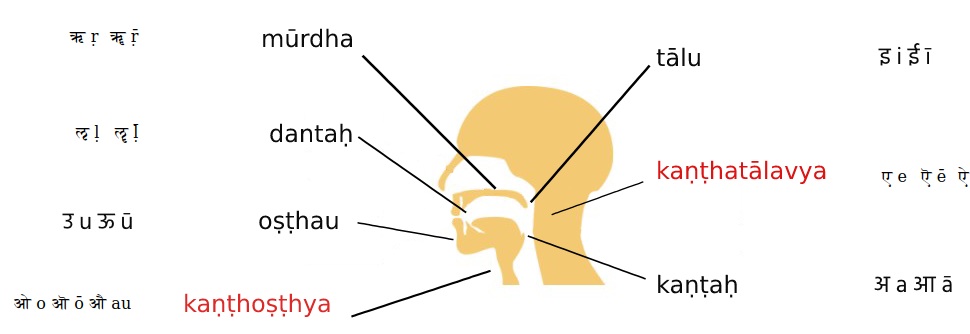
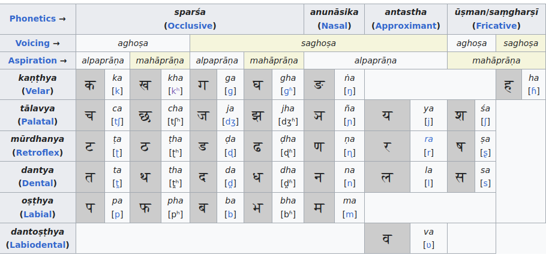

Sankrit Tutorial
Table of Contents
Alphabets akṣara/vraṇa [अक्षर/व्रण]:
In Sanskrit,alphabets are know as akṣara अक्ष
and there are 14 Vowels svara [स्वरा] and 42 Consonants vyañjanā [व्यञ्जना]
Devanagri , is based on phonetic principles that consider both the manner and place of articulation of the consonants and vowels they represent. This arrangement is usually referred to as the varṇamālā ("garland of letters")
In Sanskrit,alphabets are Expalined here https://vedantatoday.com/sanskrit-letters-aksharani/
svara [स्वरा]

| devanagari | |
|---|---|
| kaṇṭhya (Guttural) | अ [a] आ[ā] |
| tālavya (Palatal) | इ[i] ई[ī] |
| oṣṭhya (Labial) | उ[u] ऊ[ū] |
| mūrdhanya (Retroflex) | ऋ[ṛ] ॠ[ṝ] |
| dantya (Dental) | ऌ ॡ |
| kaṇṭhatālavya (Palatoguttural) | ए[e] ऎ [ē] ऐ[ai] |
| kaṇṭhoṣṭhya (Labioguttural) | ओ[o] ऒ [ō] औ[au] |
| अं [aṁ] अः [aḥ] | |
| ॲ ऍ |
vyañjanā [व्यञ्जना]
source : https://en.wikipedia.org/wiki/Devanagari Consonants 
IAST
International Alphabet of Sanskrit Transliteration (IAST) is a transliteration scheme that allows the lossless romanisation of Indic scripts as employed by Sanskrit and related Indic languages. It is based on a scheme that emerged during the 19th century from suggestions by Charles Trevelyan, William Jones, Monier Monier-Williams and other scholars, and formalised by the Transliteration Committee of the Geneva Oriental Congress, in September 1894.
| अ a | आ ā | इ i | ई ī | उ u | ऊ ū | ऋ ṛ | ॠ ṝ |
| ऌ ḷ | ॡ ḹ | ए e | ऎ ē | ऐ ai | ओ o | ऒ ō | औ au |
| अं aṁ | अः aḥ | ॐ oṁ |
| क ka | ख kha | ग ga | घ gha | ङ ṅa |
| च ca | छ cha | ज ja | झ jha | ञ ña |
| ट ṭa | ठ ṭha | ड ḍa | ढ ḍha | ण ṇa |
| त ta | थ tha | द da | ध dha | न na |
| प pa | फ pha | ब ba | भ bha | म ma |
| य ya | र ra | ल la | व va | |
| श śa | ष ṣa | स sa | ह ha | |
| ळ ḻa | क्ष kṣa | ज्ञ jña |
Preview
Top Sankrit Literature
- Veda
- Upanishad
- Purana
- Itihasa
- Sutra
- Shastra
- Smrti
- Darshana
- Kavya
- Katha
- Bhagavat Gita
Classification of Literation :
- Veda Upanishad Sutra:
- Consit of 4Vedas Rig,Sama,…etc, Updanishad, Sutra: Patanjali, Panini,Jothisya etc,,
- Generally it is teached under Experienced scholars in Resident Schools 10-15;
- Shastra Smrti Kavya
- Learnt as Special Subject by Scholar in their Curriculums.
- Katha Shloka
- After learnning Language Basics you can yourself comprehend
Course Structure
Lesson Plan:
Course :1
Level 1
Alphabets, Noun,Pronoun, Verb, Past, Present Tense, Gender, Number Sentence formation
Level 2
All 7 cases : Order/Request, Past and Future Tenses, Verb Root and Forms, Krt Word
Level 3:
All 7 cases of mostly used vowel ending words, Analyzing sentences in stories and Subhitam, Indeclinable;
Conversatoins and construction of comples sentences with excercises
Course 2:
Level 4
Different Verb,
Form of Ten
Categories, Passive Voice,
Adverb, Numerals,
stories and subhashitam
Level 5
Sandhi : Swara , Vyanjana , Visarga
with examples and exercises
Tips to decode shloka
Course 3:
Level 7
All 7 Cases of Nouns,
adjective
numerals, pronouns of all type words
called as shabdamanjari
Level 8
Dhatumanjari - Verb Forms, root category,
sarva-ardha-dhaduka tenses and moods formation
Level 9
Chandamama Story analysis for sentence
Construction and usage of tense, nouns, adjective adverb etc.
Course 4 :
Level 9
Pancharantna Katha
Level 10:
Subhashitam of Bhattahari